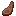

素材名を開くと効果候補を確認できます。段階の換算は 1段階あたりの能力値 を参照してください。
肉の素材
プール内の効果は食材固有の抽選候補、特殊効果は反転・追加などの素材の作用で絞り込みます。
条件に合う項目がありません。検索語や分類を変えてください。
生の牛肉栄養 3攻撃力上昇 / 剛力 / 攻勢 / 空腹
| 効果 | 種別 | 段階 | 秒数 | 重み |
|---|---|---|---|---|
| 攻撃力上昇 | バニラ効果 | 1～1 | 30～60 | 1 |
| 剛力 | 装備能力 | 1～1 | 60～120 | 2 |
| 攻勢 | 装備能力 | 1～2 | 90～180 | 1 |
| 空腹 | バニラ効果 | 1～1 | 10～20 | 2 |
生の豚肉栄養 3生命力 / 守勢 / 空腹
| 効果 | 種別 | 段階 | 秒数 | 重み |
|---|---|---|---|---|
| 生命力 | 装備能力 | 1～1 | 60～120 | 2 |
| 守勢 | 装備能力 | 1～2 | 90～180 | 1 |
| 空腹 | バニラ効果 | 1～1 | 10～20 | 1 |
生の羊肉栄養 2守勢 / 魔守 / 空腹
| 効果 | 種別 | 段階 | 秒数 | 重み |
|---|---|---|---|---|
| 守勢 | 装備能力 | 1～1 | 60～120 | 2 |
| 魔守 | 装備能力 | 1～2 | 90～180 | 1 |
| 空腹 | バニラ効果 | 1～1 | 10～20 | 1 |
生の鶏肉栄養 2加速 / 身かわし / 詠唱短縮 / 空腹
| 効果 | 種別 | 段階 | 秒数 | 重み |
|---|---|---|---|---|
| 加速 | 特殊能力 | 1～1 | 60～120 | 2 |
| 身かわし | 装備能力 | 1～1 | 60～120 | 1 |
| 詠唱短縮 | 装備能力 | 1～2 | 90～180 | 1 |
| 空腹 | バニラ効果 | 1～1 | 10～20 | 2 |
生の兎肉栄養 3跳躍力上昇 / 移動速度上昇 / 魔力回復 / 空腹
| 効果 | 種別 | 段階 | 秒数 | 重み |
|---|---|---|---|---|
| 跳躍力上昇 | バニラ効果 | 1～1 | 30～60 | 2 |
| 移動速度上昇 | バニラ効果 | 1～1 | 30～60 | 1 |
| 魔力回復 | 装備能力 | 1～2 | 90～180 | 1 |
| 空腹 | バニラ効果 | 1～1 | 10～20 | 1 |
ステーキ栄養 8攻撃力上昇 / 剛力 / 攻勢 / 裂傷 / STR / 会心
| 効果 | 種別 | 段階 | 秒数 | 重み |
|---|---|---|---|---|
| 攻撃力上昇 | バニラ効果 | 1～2 | 45～75 | 1 |
| 剛力 | 装備能力 | 1～2 | 120～240 | 2 |
| 攻勢 | 装備能力 | 1～2 | 90～180 | 2 |
| 裂傷 | 装備能力 | 1～1 | 120～240 | 1 |
| STR | 配分補正 | 10～15 | 90～180 | 1 |
| 会心 | 装備能力 | 1～2 | 90～180 | 1 |
焼き豚栄養 8生命力 / VIT / 衝撃吸収 / 守勢 / 会心耐性
| 効果 | 種別 | 段階 | 秒数 | 重み |
|---|---|---|---|---|
| 生命力 | 装備能力 | 1～2 | 120～240 | 2 |
| VIT | 配分補正 | 10～15 | 90～180 | 1 |
| 衝撃吸収 | バニラ効果 | 1～1 | 60～120 | 1 |
| 守勢 | 装備能力 | 1～2 | 90～180 | 1 |
| 会心耐性 | 装備能力 | 1～2 | 90～180 | 1 |

焼き羊肉栄養 6守勢 / 魔守 / 受け流し / 生命力 / 魔会心耐性
| 効果 | 種別 | 段階 | 秒数 | 重み |
|---|---|---|---|---|
| 守勢 | 装備能力 | 1～2 | 120～240 | 3 |
| 魔守 | 装備能力 | 1～2 | 90～180 | 3 |
| 受け流し | 装備能力 | 1～2 | 45～90 | 1 |
| 生命力 | 装備能力 | 1～2 | 90～180 | 1 |
| 魔会心耐性 | 装備能力 | 1～2 | 90～180 | 1 |
焼き鳥栄養 6移動速度上昇 / 身かわし / AGI / 詠唱短縮
| 効果 | 種別 | 段階 | 秒数 | 重み |
|---|---|---|---|---|
| 移動速度上昇 | バニラ効果 | 1～2 | 60～120 | 2 |
| 身かわし | 装備能力 | 1～2 | 120～240 | 1 |
| AGI | 配分補正 | 10～15 | 90～180 | 1 |
| 詠唱短縮 | 装備能力 | 1～2 | 90～180 | 1 |
焼き兎肉栄養 5跳躍力上昇 / 会心 / 眩暈打ち / 魔会心
| 効果 | 種別 | 段階 | 秒数 | 重み |
|---|---|---|---|---|
| 跳躍力上昇 | バニラ効果 | 1～2 | 60～120 | 2 |
| 会心 | 装備能力 | 1～2 | 120～240 | 1 |
| 眩暈打ち | 装備能力 | 1～1 | 120～240 | 1 |
| 魔会心 | 装備能力 | 1～2 | 90～180 | 1 |
ウサギシチュー栄養 10跳躍力上昇 / 移動速度上昇 / 身かわし / 魔会心
返却容器：ボウル
| 効果 | 種別 | 段階 | 秒数 | 重み |
|---|---|---|---|---|
| 跳躍力上昇 | バニラ効果 | 2～2 | 60～120 | 2 |
| 移動速度上昇 | バニラ効果 | 1～1 | 60～120 | 1 |
| 身かわし | 装備能力 | 2～2 | 120～240 | 1 |
| 魔会心 | 装備能力 | 1～2 | 90～180 | 1 |
腐った肉栄養 4 · 減少剛力 / 吸命 / 空腹 / 魔撃
| 効果 | 種別 | 段階 | 秒数 | 重み |
|---|---|---|---|---|
| 剛力 | 装備能力 | 1～2 | 60～120 | 2 |
| 吸命 | 装備能力 | 1～1 | 60～120 | 1 |
| 空腹 | バニラ効果 | 2～2 | 20～40 | 2 |
| 魔撃 | 装備能力 | 1～2 | 90～180 | 1 |
ウサギの足栄養 1跳躍力上昇 / 身かわし / AGI / 詠唱短縮
| 効果 | 種別 | 段階 | 秒数 | 重み |
|---|---|---|---|---|
| 跳躍力上昇 | バニラ効果 | 2～3 | 60～120 | 2 |
| 身かわし | 装備能力 | 1～2 | 90～180 | 2 |
| AGI | 配分補正 | 10～15 | 90～180 | 1 |
| 詠唱短縮 | 装備能力 | 1～2 | 90～180 | 1 |